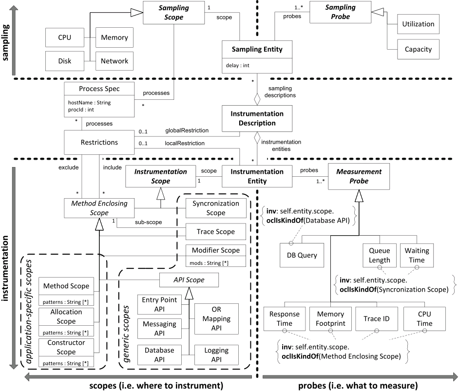

IDM
In general, IDM can be partitioned along two dimensions: (I) We distinguish between sampling and instrumentation. Sampling is the process of periodically retrieving information from a certain resource (e.g. CPU utilization, Disk I/O, etc.) while instrumentation is used to retrieve measurement data (e.g. response times) from the control flow of the AUT. (II) In both cases we distinguish between scopes and probes. While scopes describe which resource to monitor, respectively where in the code to instrument, probes define what (which metric) should be measured.
The Instrumentation and Monitoring (IaM) Description is the root element of IDM, constituting a container for Sampling and Instrumentation Entities which are explained in the following.Sampling
A Sampling Entity is specified by a delay (in ms) determining the sampling frequency, exactly one sampling scope (e.g. CPU, Memory, Disk or Network), and a set of sampling probes (e.g. Utilization and Capacity). The Capacity probe stands for the absolute capacity of the corresponding resource, e.g. the absolute GHz power of a CPU, the network bandwidth or total memory. The Sampling Scope can be further restricted to a set of operating system processes (Process Spec) specified by a host name and a process id. In this way one could monitor for instance the CPU utilization of a single process instead of the overall CPU utilization.Instrumentation
An Instrumentation Entity comprises an Instrumentation Scope, a set of Measurement Probes (i.e. what to measure), and an optional local Restriction. We distinguish different types of scopes, both for system-specific specification as well as generic specification of the scope:Synchronization Scope
This scope covers all points in the AUT, where synchronization of threads occurs due to a lock on a passive resource.Method Enclosing Scope
The Method Enclosing Scope is an abstract scope providing a common parent element for all sub-scopes which cover a set of individual methods or method calls.Method Scope
The Method Scope is the most direct way to specify a set of methods to be instrumented. Hereby, a method (or a set of methods) is identified by a set of method patterns (method names with potential wild-cards). A Method Scope covers all methods whose full qualified names match a specified pattern.Allocation Scope
Covers all code statements where an object of the target classes is allocated. Analogously to the method patterns the target classes are specified by class name patterns.Constructor Scope
Covers the instrumentation of all constructors of the target classes.Modifier Scope
The Modifier Scope allows to specify a set of modifiers to describe a scope of all methods whose modifiers match all specified modifiers of the scope.API Scope
Conceptually, an API Scope covers all methods of an abstract API whose implementing methods shall be instrumented. An abstract API represents a conceptual interface for which concrete APIs consist in most modern, managed programming languages (e.g. Java, .NET, etc.). Here, we listed the following API scopes: The Entry Point API covers all entry points into a server application (e.g. in the case of Java this would be Servlets, HTTP handlers, etc.). The Messaging API covers all ways of the target context to do remote communication (e.g. in Java: JMS, RMI, etc.). The Database API and the OR Mapping API need to be mapped to the concrete standard API of the target context for managing a database connection (e.g. JDBC in Java), respectively concrete API for realizing an object-relation mapping (e.g. JPA in Java). Finally, the Logging API covers standard interfaces for logging (e.g. log4j or slf4j in Java).Trace Scope
Finally, the Trace Scope allows to instrument the whole dynamic trace (i.e. call tree) originating from the methods covered by the sub-scope. While the Method, Allocation and Constructor Scope provide a system-specific way of specifying the scope with a name pattern, the remaining scopes are generic and, thus, system-independent.Orthogonally to the Instrumentation Scope, an Instrumentation Entity comprises a set of Measurement Probes specifying the data to be retrieved from the corresponding scope. Although the probes are orthogonal to the scopes, not all probes are reasonably applicable with all scopes. Therefore, we define some restrictions (expressed as OCL statements) limiting the applicability of certain probes to corresponding sub-sets of scopes. In particular, Response Time, Memory Footprint, Trace ID and CPU Time can be measured from all Method Enclosing Scopes. Waiting Time and Queue Length can be retrieved from the Synchronization Scope. Finally, the SQL statement of an executed database query (DB Query) can be retrieved from a Database API scope.